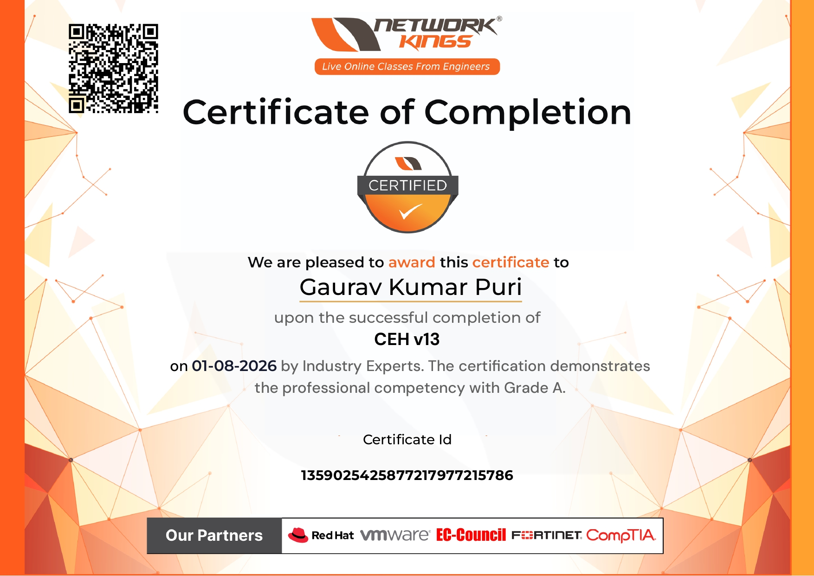
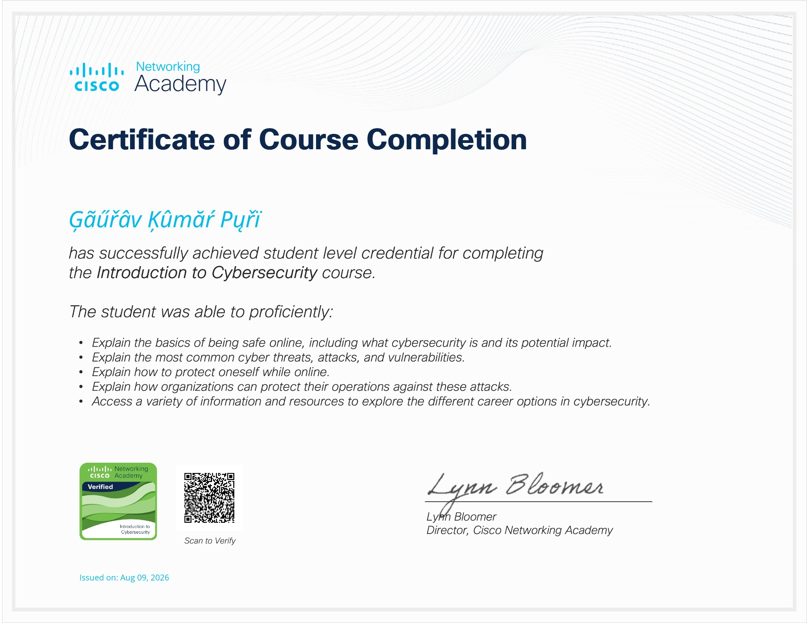
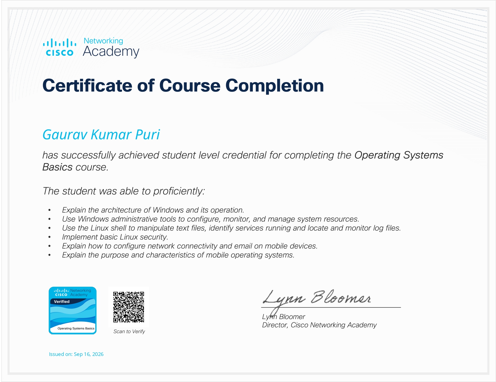
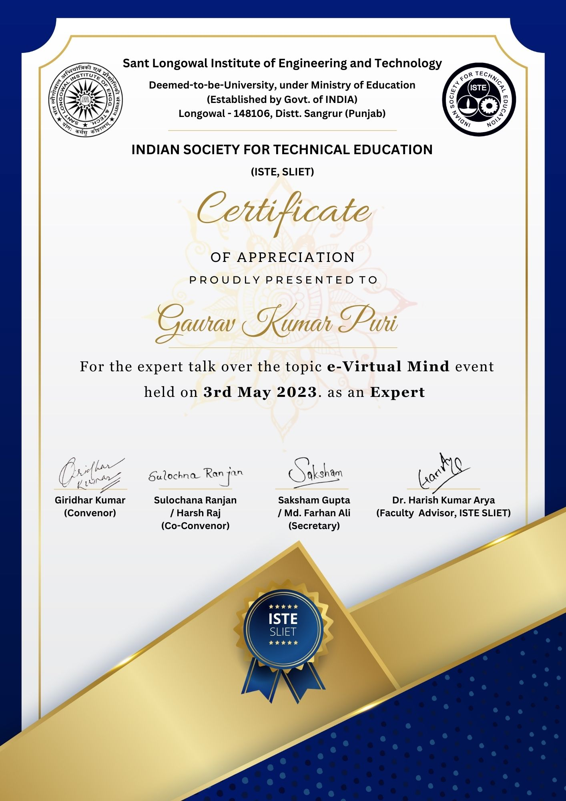
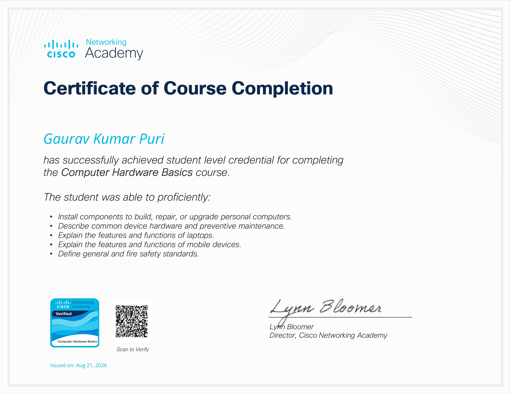

01 / INTELLIGENCE✳
AI & intelligent systems
Exploring AI assistants, model integrations, local-first workflows, knowledge systems, and useful automation.
AI workflowsLLM systemsAutomation
↗
Practical technology. Intelligent systems.
Real-world problem solving.
GEAI Technologies explores the space where artificial intelligence, cybersecurity, infrastructure, and hands-on engineering meet.
Not technology for its own sake. We focus on learning, building, diagnosing, and making complex systems easier to understand.
Exploring AI assistants, model integrations, local-first workflows, knowledge systems, and useful automation.
Building foundational knowledge in network analysis, security tooling, Linux, vulnerability concepts, and defensive thinking.
Practical investigation of operating systems, virtualization, hardware, connectivity, storage, and system reliability.
Turning confusing symptoms into structured checks, evidence-based diagnosis, repeatable fixes, and clear documentation.
A growing collection of projects and technical case studies. Each one documents the problem, the approach, and what was learned.
A local-first AI workspace exploring conversational AI, persistent memory, project workspaces, knowledge indexing, web crawling, and modular tools.
$ inspect network state
✓ adapters enumerated
$ trace connection path
→ validate gateway + sharing
$ document findings
A structured troubleshooting case-study format for adapter profiles, Internet Connection Sharing, ping tests, firewall rules, and connectivity diagnostics.
Hands-on learning across PC components, Windows and Linux administration, virtual machines, storage, boot repair, and system diagnostics.
NOTE This portfolio describes active exploration and documented technical work. It does not imply commercial availability or production readiness for every project.
Selected course completions and recognition. Open a certificate to view the original document where an image is available.

VIEW ↗Network Kings · Grade A

VIEW ↗Cisco Networking Academy · Aug 2026

VIEW ↗Cisco Networking Academy · Sep 2026

VIEW ↗ISTE, SLIET · May 2023

VIEW ↗Cisco Networking Academy · Aug 2026
Verification note: Certificate images are provided for viewing and have not been independently verified by this website.
GEAI Technologies is an independent technology initiative built around a simple idea: understand systems deeply, use technology thoughtfully, and turn learning into useful outcomes.
Its current work spans AI experimentation, cybersecurity learning, infrastructure troubleshooting, and practical technical documentation. The goal is to grow these foundations into useful tools and solutions over time.
Connect to discuss technology, projects, troubleshooting, or opportunities to learn and build together.